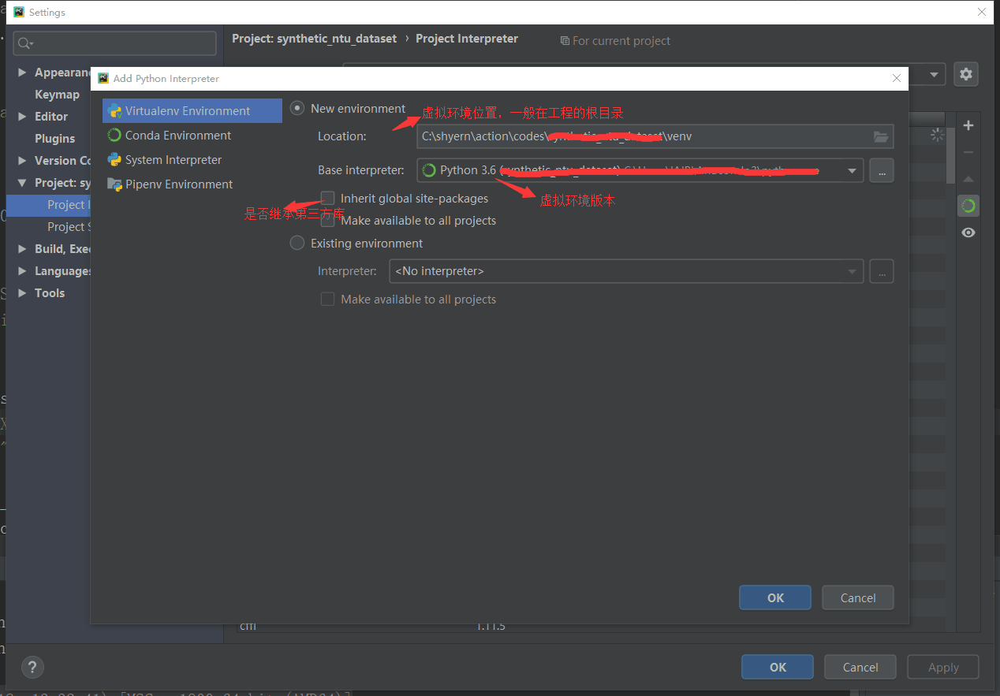

创建虚拟环境是为了让项目运行在一个独立的局部的Python环境中，使得不同环境的项目互不干扰。
pip install virtualenv
使用清华源安装：pip install virtualenv -i https://pypi.python.org/simple/
cd 到存放虚拟环境光的地址
virtualenv ENV 在当前目录下创建名为ENV的虚拟环境（如果第三方包virtualenv安装在python3下面，此时创建的虚拟环境就是基于python3的）
virtualenv -p /usr/local/bin/python2.7 ENV2 参数 -p 指定python版本创建虚拟环境
virtualenv --system-site-packages ENV 参数 --system-site-packages 指定创建虚拟环境时继承系统三方库
cd ~/ENV 跳转到虚拟环境的文件夹
source bin/activate 激活虚拟环境
pip list 查看当前虚拟环境下所安装的第三方库
deactivate 退出虚拟环境
直接删除虚拟环境所在目录即可

可以直接在pycharm中使用创建好的虚拟环境，安装和查看第三方库
也可以在终端中使用虚拟环境，转到pycharm中设定的虚拟环境的位置，一般在工程的根目录。这个虚拟环境和上述用命令创建的虚拟环境一样，采用上述激活/退出虚拟环境命令即可执行相应操作。
conda create -n ENV python==3.6
这样就创建了一个名字为ENV，基于python版本3.6的一个虚拟环境了。注意，这里和pip建立的虚拟环境不同，pip建立的虚拟环境会直接在当前目录下生成一个虚拟环境的目录，激活虚拟环境也需要指定这个目录才行。而conda安装的虚拟环境，只会把虚拟环境的目录生成在anaconda安装目录下的env目录下。所以，conda创建的虚拟环境有一个很大的优点就是不用指定虚拟env的路径，不过前提是你需要把conda的环境变量早早设置好。
source activate ENV 激活虚拟环境
source deactivate 退出虚拟环境
conda install -n ENV [package]
conda info --envs
参考博客：